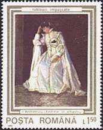

A page of Victor
Manta, Switzerland
The Romanian people, sick and tired of 45 years of an oppressive regime, of the
dictatorship of the unique Communist party and of the person who represented it
during the last 25 years, the dictator Nicolae Ceausescu, upraised against and
deposed the regime in December 1989. During the revolt, some mysterious forces,
that weren't identified till now, have shot on mainly disarmed citizens who
manifested for freedom on the streets of Bucharest, the capital of Romania. The
army, who quickly rejoined the demonstrators, has retorted the unseen killers
with guns and sometimes with artillery.
During these street battles many objects were damaged,
traces of bullets and of fire being seen during many years on the buildings of
Bucharest. Unfortunately the paintings found in the National Art Museum have
also suffered severe damages.
These damages have profoundly impressed the amateurs of art
and the population alike and for this reason on October 25, 1990, only 10 months
after the described events, the Romania postal administration has issued a
quite unusual set of six stamps, showing damaged masterpieces of Romanian and
foreign masters. All stamps of the set
mention on the top Tablouri împuscate, with the meaning Shot Paintings.
 |
On the
paintings displayed on the right and below you can see the impacts of bullets.
The stamps were probably issued quite quickly and for this reason they are
of a rather inferior quality, as compared with the stamp on the left side,
This one displays the same painting, and was issued by the same country 22 years earlier,
in 1968. This masterpiece of Romanian art was painted by
Stefan Luchian and represents Old Nicholas, the Cobza (Zither) player. Scott
numbers: 2000 and 3620 respectively.
|
 |
On
the right and below are displayed all other stamps of the set, as
follows:
- 1.50 L. Woman in Blue,
by Ion Andreescu.
Scott 3621.
- 4 L. Spring Time, by Peter
Brueghel, the Elder.
Scott 3624.
- 2 L. The Gardener (Safta, the Florist), by
Stefan Luchian.
Scott 3622.
- 3 L. Vase of Flowers, by Jan
Brueghel, the
Elder. Scott 3623.
- 5. L. Madonna and Child, by B.
Paggi. Scott 3625. Please notice that not much was left of it, so it
looks rather like a modern painting.
I'm quite sure that
one day, eventually with the help of international specialists, these
wonderful works of art will be restored and that I'll have the pleasure
to show you them in
their original state.
|
 |
|

|
All in
all an
impressive set, acting as a memory flash and revealing a short piece of recent
history that has shaken one more country in the tormented Balkan Peninsula.
Notice. This
wasn't for the first time that Romanian masterpieces or their legal holders
suffered - just an example. In the year 1956, after 39 years, the
government of the former USSR returned to Romania some works of art belonging to
Romanian museums, works evacuated in 1917 during the WW I by the Romanian
government. Among these were also the paintings of the renown Romanian artist
Ion Andreescu. Unfortunately, when they come back, the
specialists discovered that many of these paintings were replaced by fakes.
Of course nothing could be done against the great "friend" and
"liberator" from the East. Source: Ioan Andreescu, p.9. ALCOR EDIMPEX,
June 1997, ISBN 973-97901-4-3. This hasn't hindered and has even encouraged the
Romanian government to requisition, during the mentioned 45 years of communist
dictatorship, numberless works of art from their legal, private owners.
SHOT - THEN
SURCHARGED!
Roughly 10 years
after their issue, the first five values of the set were surcharged
with a new
value of Lei 1700, that corresponds to the fee for a domestic letter. The old face value was
covered by a black image of an easel, in the "tradition" of all recent
overprints of the Romanian post.

To cheer up the things, during a trip to Romania I have let cancel a whole set
on a letter. I have chosen a date that tells something to me, that of September 19, 2000,
the day of my birth anniversary. The clerk at the postal office No. 45, on the Brezoianu Street in
Bucharest, has done it with a lot of professionalism and even with an obvious
pleasure when I have told her why have I chosen that very day.
Please
notice that the value of Lei 5 wasn't surcharged, probably because it was
already out of stock, due to its limited printed quantity of only 250,000, as
compared with 800,000 to 3,000,000 for the other stamps of the set.
The image
above shows only the upper part of the cover, that has in its bottom part other
two stamps, in order to attain the value of Lei 12,300, the price of an air mail
letter sent from Romania to Switzerland. Actually a quite high price for the
income of most of Romanians.
Links to other
Romanian pages on the Arts on Stamps site:
In
Romanian